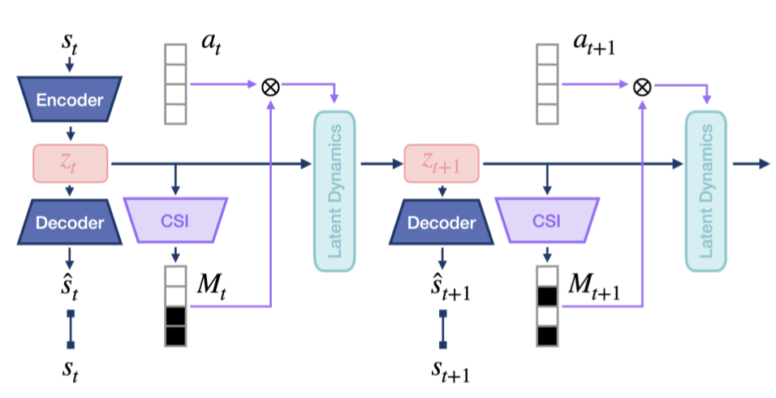
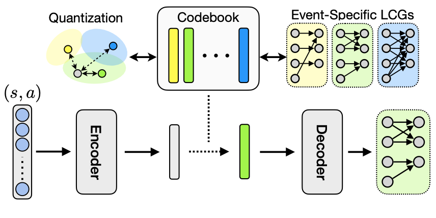
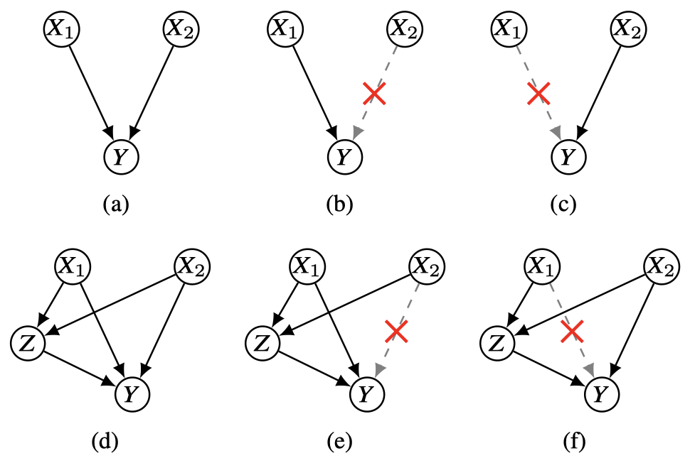
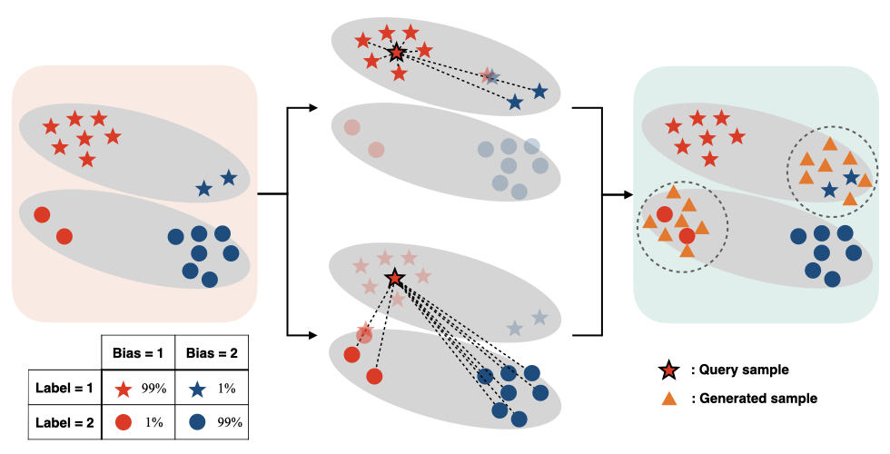

|
Research
My research is focused on reinforcement learning and causal representation learning, especially in the context of learning and reasoning methods for sequential decision-making.
|
Publications
(* equal contribution, ^ equal advising)
|
|

|
Efficient Monte Carlo Tree Search via On-the-Fly State-Conditioned Action Abstraction
Yunhyeok Kwak*,
Inwoo Hwang*,
Dooyoung Kim,
Sanghack Lee^,
Byoung-Tak Zhang^
Uncertainty in Artificial Intelligence (UAI), 2024 (Oral)
Paper /
Code
|
|

|
Causal Dynamics Learning with Quantized Local
Independence Discovery
Inwoo Hwang,
Yunhyeok Kwak, Suhyung Choi,
Byoung-Tak Zhang^,
Sanghack Lee^.
International Conference on Machine Learning (ICML), 2024
ICML Workshop on Spurious Correlations, Invariance, and Stability, 2023
Paper /
Code /
Workshop
|
|

|
On Discovery of Local Independence over
Continuous Variables via Neural Contextual Decomposition
Inwoo Hwang,
Yunhyeok Kwak, Yeon-Ji Song,
Byoung-Tak Zhang^,
Sanghack Lee^.
Conference on Causal Learning and Reasoning (CLeaR),
2023
Paper
/
Code
|
|

|
SelecMix: Debiased Learning by
Contradicting-pair Sampling
Inwoo Hwang,
Sangjun Lee, Yunhyeok Kwak,
Seong Joon Oh,
Damien Teney,
Jin-Hwa Kim^,
Byoung-Tak Zhang^.
Neural Information Processing Systems (NeurIPS),
2022 (Scholar Award)
ICML Workshop on Spurious Correlations, Invariance,
and Stability, 2022
Paper
/
ArXiv /
Code
/
Workshop
|
Work Experience
- Reserach Intern, Naver Clova, July 2020 - Dec. 2020
|
Academic Services
- Conference Reviewer: AISTATS 2024
|
Honors and Awards
- Mid‑way Prize (Ranked at the top of three categories),
Animal-AI
Olympics, NeurIPS 2019 Competition
- Summa Cum Laude, 2021
- Academic Scholarship, 2018-2020
|
The source of this website is from here.
|
|